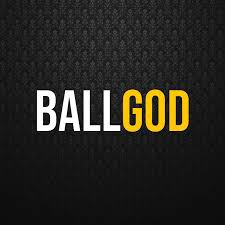

 The NBA began life as the Basketball Association of America in 1946 and played under that monkier for 3 years before, in 1949, merging with the National Basketball League and changing names to the NBA. The BAA started out with 11 teams in 1946 but lost four of them before the start of the next season. Despite the loss of four teams the BAA was having a lot of success against its rival the NBL and was able to entice four of the NBL's premire franchises to join the BAA in 1948. When the two leagues merged in 1949 it brought the total number of teams to 17 but the new league would quickly start losing teams. After just six years the number of teams had dropped to just 8. Financial troubles plagued the league from the start and this was especially true for the NBL teams that joined during the merger due to them being in smaller markets. The owner of the Fort Wayne Pistons, a former NBL team, named Frank Zollner was key in keeping the NBA financially afloat during this time. The NBA continued with 8 teams from 1955 until 1961 when the Chicago Packers joined the league. The Packers, now the Washington Wizards, are not considered to be the first expansion team, that distriction goes to the Chicago Bulls because the Bulls, who joined in 1966, had an actual expansion draft. From 1966 until 2004 the league seen an expansion boom with a total of 21 teams joining the league. The NBA has always been a league that was dominated by what some historians have called "teams of the era". The early decades of the NBA were dominated the Minneapolis Lakers and their star George Mikan. From 1948 until 1954 the Lakers won 5 NBA championships. From 1957 until 1969 the Boston Celtics won 11 championships in 13 seasons and the 1980s was dominated by the Lakers and Celtics who combined to win 8 of the 10 titles during that decade. The 1990s saw the rise of Michael Jordan's Chicago Bulls; who would capture 6 titles during the decade. The 2000s saw the Lakers again being domiante winning 5 titles during the decade. Only the 1970s and 2010s did not see a franchise win at least 4 NBA titles, though the Golden State Warriors got close by winning 3 titles in the 2010s. In the 1960s as the NBA was going through a growth spurt by adding new teams, a rival spring up to challenge it in the ABA. The ABA would last from 1967 until 1976 when it merged with the NBA. The 1980s saw the league and the game of basketball grow termendously and a lot of that had to do with the rivalry of Magic Johnson and Larry Bird. The two have become the defination of what a rivalry is supposed to be and their teams would dominate the decade. Because of this rivalry a lot of interest grew in the America about the NBA and the first major TV deals started to be signed as well as another wave of expansion. The 1990s saw the age of Jordan. No person in team sports has had such an impact that extended out side of the game. Jordan became the NBA and perhaps even bigger than the league. Had it not been for a two year retirement Jordan may have won many more NBA titles. The post Jordan NBA seen an increase in international players joining the NBA. The 2000s were truely an international league as players from every corner of the globe started joining the NBA and many of them, such as Dirk Nowitzki, started to find success in the league. The past decade was split, first by parity with 5 teams winning titles in six seasons, but than seen the rise of one of the most dominate teams ever in the Golden State Warriors. The Warriors would make five consecutive NBA finals and win 3 titles during that span.